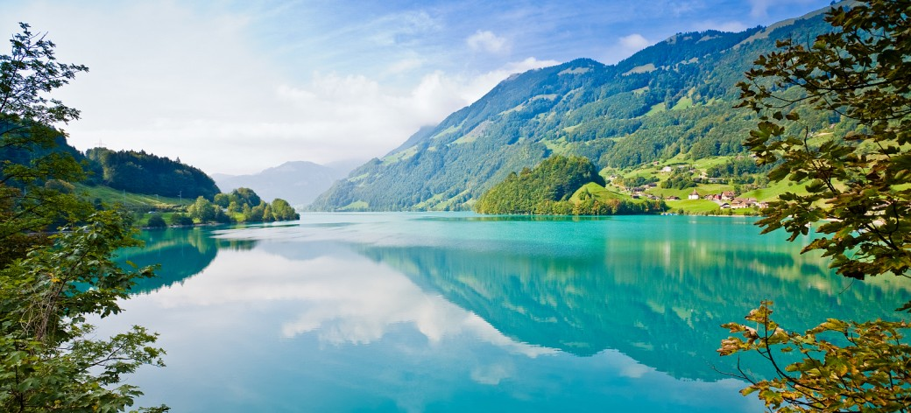

This is my Webpage. I created this website by using HTML5 and CSS3. If you are interested,
you could check it out.
This is my Webpage. I created this website by using HTML5 and CSS3. If you are interested,
you could check it out.
Hi. My name is Karina Doynova and I am interested in developing. I am learning java right now and in my free time I make researches and try to create websites by using the technologies HTML and CSS. As I am new in this adventure, I invite you to join me, if you are also as motivated as I am. I want to improve my knowledge and create more and more... So without further hesitation, just text me (You will find a contact form bellow.)
Some more information about me
You already know, that I love programming. But some more information about me is that I also love nature. Yes, there is nothing between programming and nature. But the thing, that I love the most is the nature and I love spending time listening to the songs of the birds, or walking and just seing all around me. This gives me the motivaiton I need to go on and to be motivated all the time.
{kind=link}